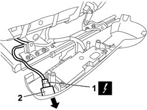

7045M10 FRONT SEAT HEATING SYSTEM SWITCH, LEFT OR RIGHT - R+R
- Path
- Procedures > 70 FITTINGS > 7045 FRONT SEATS > 7045M FRONT SEAT HEATING > 7045M10 FRONT SEAT HEATING SYSTEM SWITCH, LEFT OR RIGHT - R+R
- Kind
- repair procedure (removal / refitting; the operation number is the code)
- Applies to
- all engines; all production periods
- Interactive page
- https://sloeber94.github.io/elrnDB-fCrm/en/#/194001134
Applies to: all engines; all production periods
 Removing
Removing
 Refitting
Refitting- Open the front side door.
- Turn the ignition key to the OFF position.
- Disconnect the negative battery terminal.
Description | Connector | |
|---|---|---|
BATTERY |
Op. 7045A10 FRONT SEAT (ONE), LEFT OR RIGHT - R.R.
Op. 7045A43 FRONT SEAT EXTERIOR GUARD (ONE), LEFT OR RIGHT - R.R
1. Disconnect the electrical connection.
Description | Connector | |
|---|---|---|
1 | DRIVER'S SEAT HEATER SWITCH |
Description | Connector | |
|---|---|---|
1 | PASSENGER SEAT HEATER SWITCH |
2. Open the retaining clips and withdraw the switch in in the direction indicated.

Applies to: all engines; all production periods
Refitting
Removing- Check that the switch is not damaged.
- Open the retaining clips and fit the switch.
- Connect the electrical connection.
Description | Connector | |
|---|---|---|
DRIVER'S SEAT HEATER SWITCH |
Description | Connector | |
|---|---|---|
PASSENGER SEAT HEATER SWITCH |
Op. 7045A43 FRONT SEAT EXTERIOR GUARD (ONE), LEFT OR RIGHT - R.R
Op. 7045A10 FRONT SEAT (ONE), LEFT OR RIGHT - R.R.
- Connect the negative battery terminal.
Description | Connector | |
|---|---|---|
BATTERY |
Topics linked from this page (5)
- 7045A10 FRONT SEAT (ONE), LEFT OR RIGHT - R.R.
- 7045A43 FRONT SEAT EXTERIOR GUARD (ONE), LEFT OR RIGHT - R.R
- A001 BATTERY
- I065 DRIVER'S SEAT HEATING SWITCH
- I066 PASSENGER SEAT HEATING SWITCH